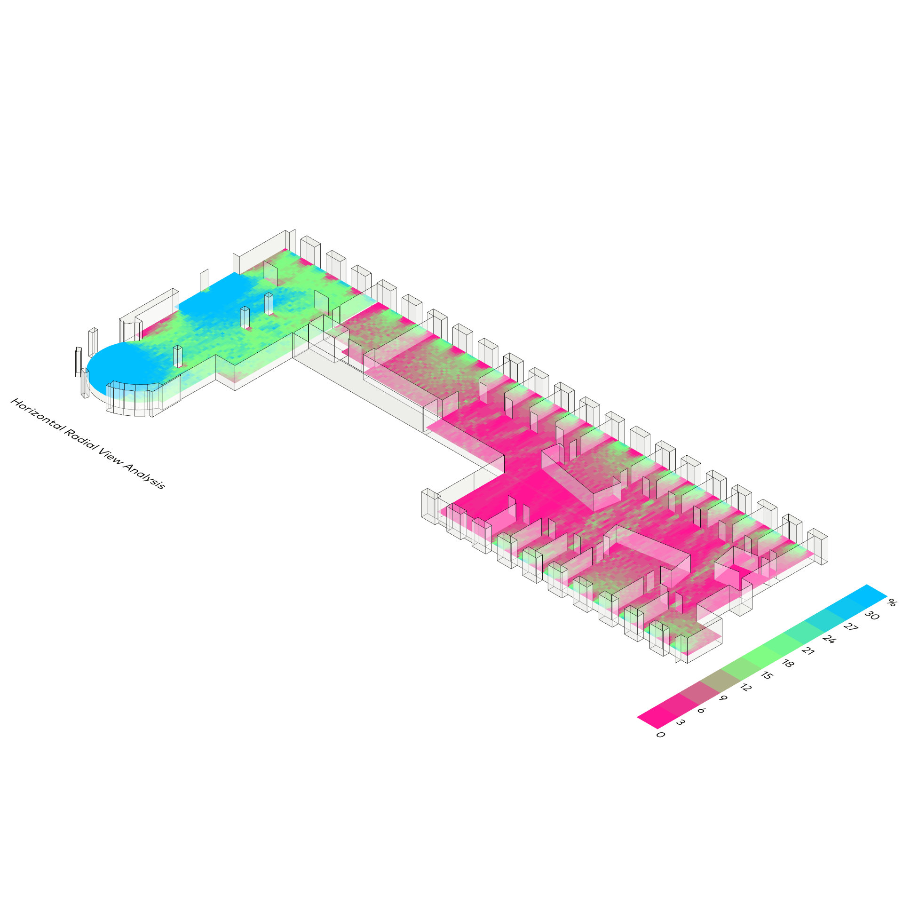
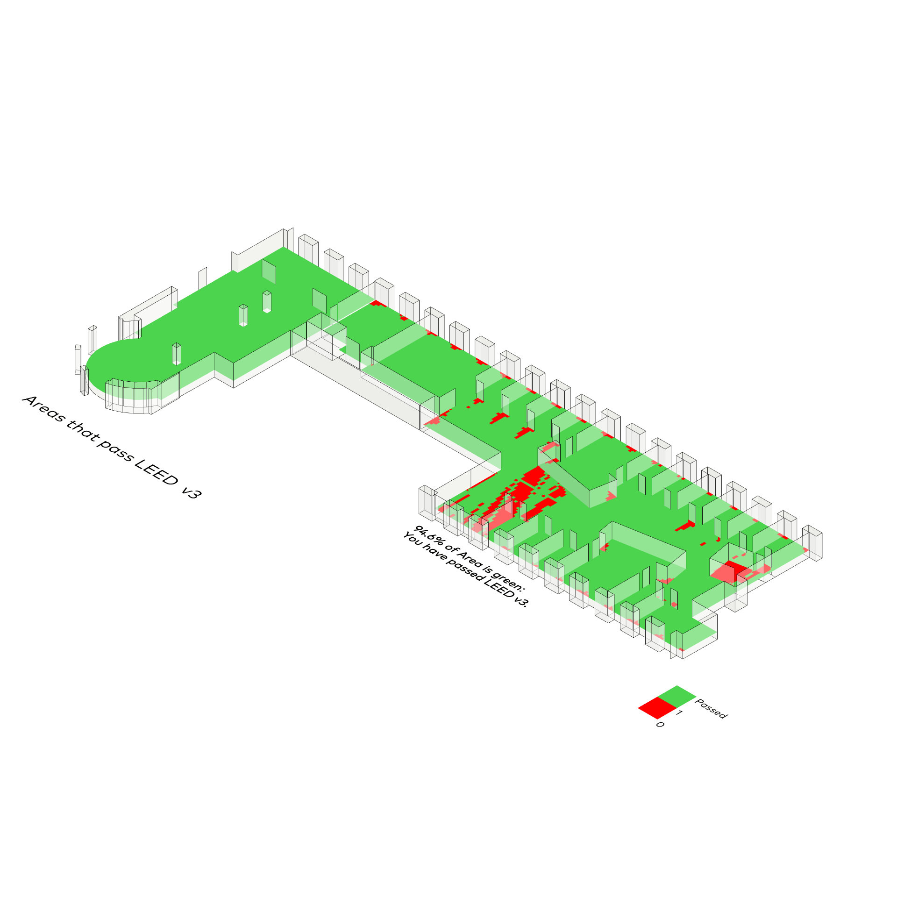
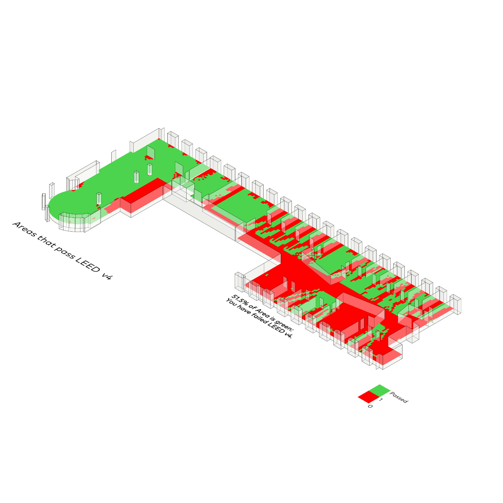

LEED®
Ladybug
⬤ Ladybug überprüft LEED-Konformität automatisch – bewertet Energieeffizienz, Tageslicht (sDA ≥55%, ASE <10%), Ausblick (DA ≥50%, cDA ≥20%) und thermischen Komfort. Identifiziert Schwellenüberschreitungen mit Optimierungsfeedback und Kreditpunkte-Zuordnung. Erreicht Zertifizierungsstufen Certified bis Platinum – internationaler Standard für nachhaltige, gesunde Gebäudeplanung.
⬤ Ladybug automatically checks LEED compliance – evaluating energy efficiency, daylight (sDA ≥55%, ASE <10%), views (DA ≥50%, cDA ≥20%), and thermal comfort. Identifies threshold violations with optimization feedback and credit point allocation. Achieves Certified to Platinum certification levels – the international standard for sustainable, healthy building design.